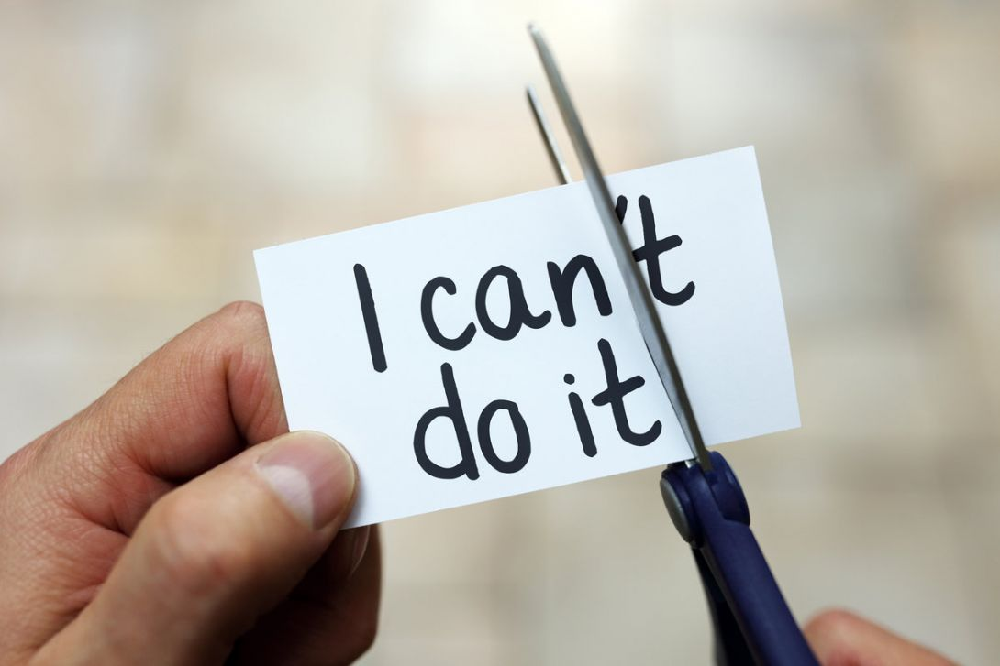

Teamwork makes the dream work
The first thing that you should remember, when feeling down, is that you are not alone. Talk to people, especially your family and friends. Let them know how you are feeling. A problem shared is a problem halved! Don't be afraid to ask for help.


If you can believe it, you can achieve it
Your life will never change unless you take action. How can you say something like "I can't do it", if you haven't even tried it. Or if you have, then did you try hard enough? Life is based around belief. So better get to it and start believing in yourself!